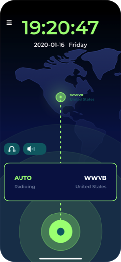
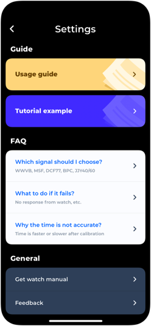

WatchWave
Supports all radio watches, can receive and calibrate anywhere
Support iPhone and iPad
Introduction
WatchWave can perfectly simulate the signals of 6 radio stations around the world. No matter where you are, you can receive radio signals to calibrate your radio watch and clock.
We use Swift programming language to make sounds through the speakers, and it is incredible to realise the perfect simulation of radio signals. We call this simulation technology "WATCHWAVE SIMULATION TECHNOLOGY".
We have well-designed the interface of the App, which simplifies the operation process and makes it convenient to use.
Perfect Multi-Band 6 simulation
iPhone and iPad Preview

